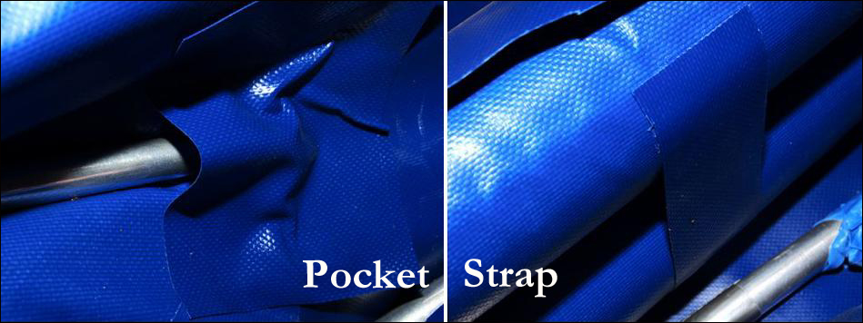

| Sonnet ( Sleeve Pockets and Sleeve Straps) | Menu Previous Page Next Page |
|

Sleeve Pockets (2ea)
Add small PVC side stringer "pockets" at the bow end of both sponson sleeves. On the Sonnet 16 that places the side stringers about 12" (305mm) from the bow and stern. This distance may vary based on the length of your sleeves. The pockets will stop the forward movement of the side tubes assuring correct forward positioning during assembly. Final sizing of the side stringers will depend on this step.
The HDPE cross brace "snaps" will be added after the PVC pockets are in place and the tubes inserted. Fit the aft cross brace tubes before inflation at the rear of coaming location, inflate, and mark the cross tube location before adding the snaps. The front tube will be your footbrace, so it's location is up to you. You can use either a snap in tube (Sonnet 16) or a swing out tube (Sonnet 18) . The snap only solution is easier to make, the swing out solution just a bit easier to assemble. Whatever you do on the 16 you can do on the 18, and vice versa.
Sleeve Straps (4ea) Add 4 PVC straps that are 8" inches from the ends of the sponson sleeves. These are glued vertically from one sponson to the other when the sponsons are inflated and are about 6" X 1" in length. These will insure that the side tubes stay in place between the sleeves during assembly. Otherwise, they could drop out of the groove between sponsons before inflation. |
|